Five Geant4 tunes; unchanged ensemble and calibration. Primary evaluation excludes known Stage 87 train/cal incoming identities. Uncertainty intervals are conditional incoming-proxy intervals, not full physics-systematic or generator-parent intervals.
Truth is always on the horizontal axis in energy-energy plots. Read the Chinese stage report for sample sizes, selection, inputs, commands and limitations.
Truth on x, reconstructed energy on y; conditional on selection. Column normalization follows PRD Eqs.(9–10) and internal note §7.2. Absolute-energy projection, not the signed inverse-energy/rapidity 30×30 matrix. Explicit overflow retained: ≥1000 GeV in paper bins, ≥6400 GeV in fine bins. Dots denote <0.05%; gray columns with dashes mean no truth support, distinct from zero migration probability.Download PDF
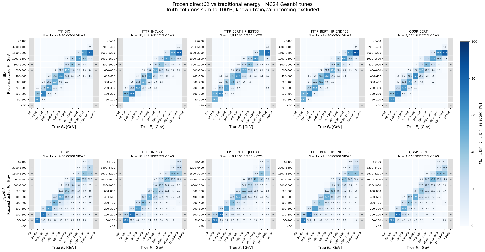
Truth on x, reconstructed energy on y; conditional on selection. Column normalization follows PRD Eqs.(9–10) and internal note §7.2. Absolute-energy projection, not the signed inverse-energy/rapidity 30×30 matrix. Explicit overflow retained: ≥1000 GeV in paper bins, ≥6400 GeV in fine bins. Dots denote <0.05%; gray columns with dashes mean no truth support, distinct from zero migration probability.Download PDF
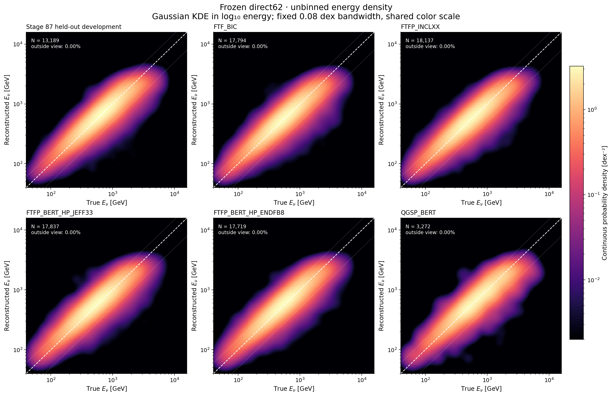
Unbinned Gaussian kernel density from every selected event, evaluated on a rendering grid; no analysis energy-bin counts. Density is with respect to dlog10(Etrue)dlog10(Ereco). Fixed bandwidth across tunes; white dashed line is exact response, dotted lines mark +50%/−50% response. Full-sample normalization; outside-view fractions recorded.Download PDF
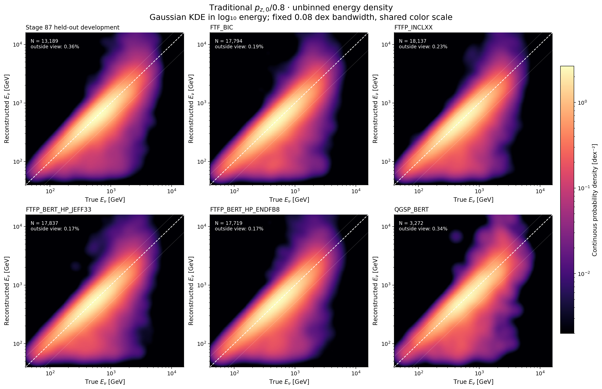
Unbinned Gaussian kernel density from every selected event, evaluated on a rendering grid; no analysis energy-bin counts. Density is with respect to dlog10(Etrue)dlog10(Ereco). Fixed bandwidth across tunes; white dashed line is exact response, dotted lines mark +50%/−50% response. Full-sample normalization; outside-view fractions recorded.Download PDF
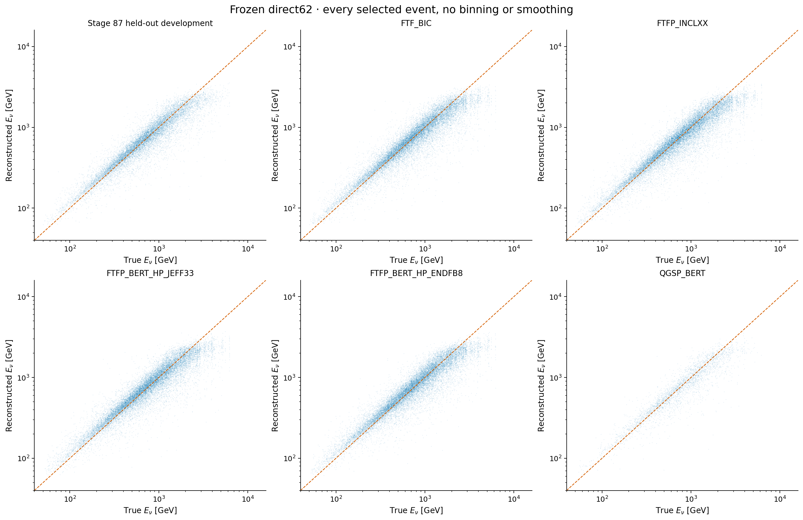
One point per selected view; no subsampling, energy bins or density smoothing. Point opacity is not a luminosity or incoming weight.Download PDF
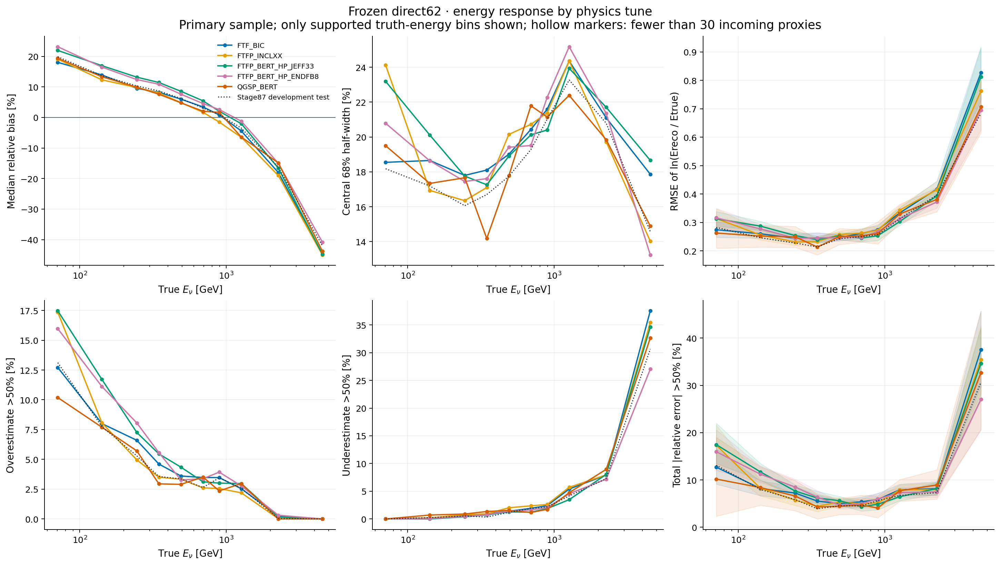
Relative error = Ereco/Etrue − 1. R68 = (q84−q16)/2, not RMS or relative sigma. Natural-log RMSE includes every selected primary event. Shading, where shown, is a 500-replicate conditional incoming bootstrap 95% interval; sparse cells remain visible.Download PDF
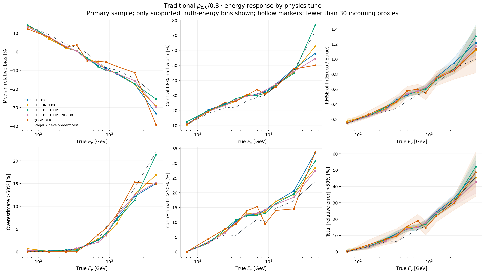
Relative error = Ereco/Etrue − 1. R68 = (q84−q16)/2, not RMS or relative sigma. Natural-log RMSE includes every selected primary event. Shading, where shown, is a 500-replicate conditional incoming bootstrap 95% interval; sparse cells remain visible.Download PDF
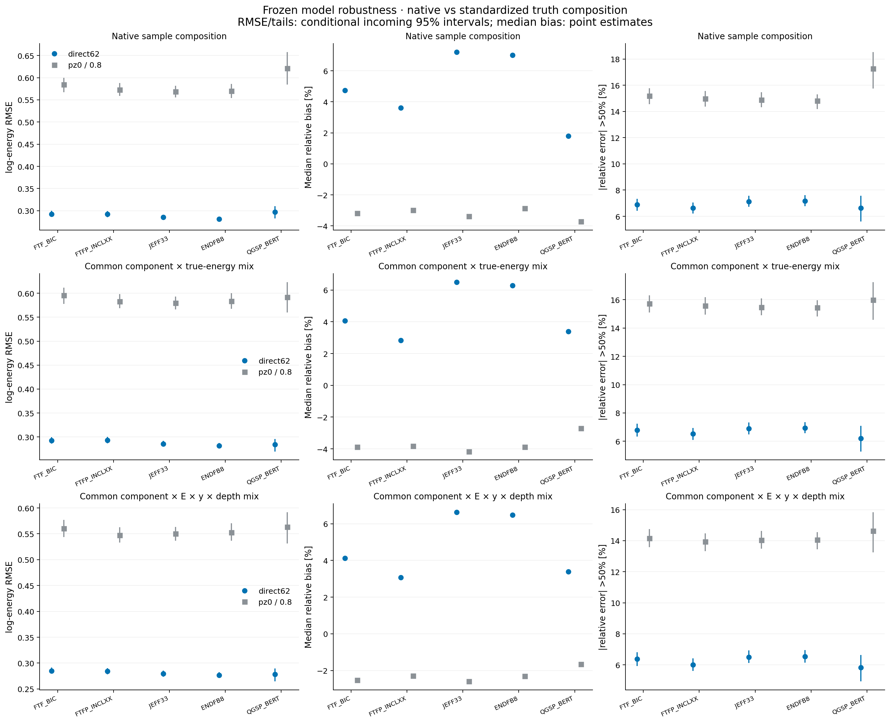
Native composition corrects the known QGSP file sampling. The second row uses the minimum common normalized component × fine true-energy distribution; the third also controls coarse true y and vertex depth. Unknown y has its own retained category. Targets and fixed cell boundaries were defined before new model outcomes. Within-cell variations and production differences remain; unsupported cells are not extrapolated.Download PDF
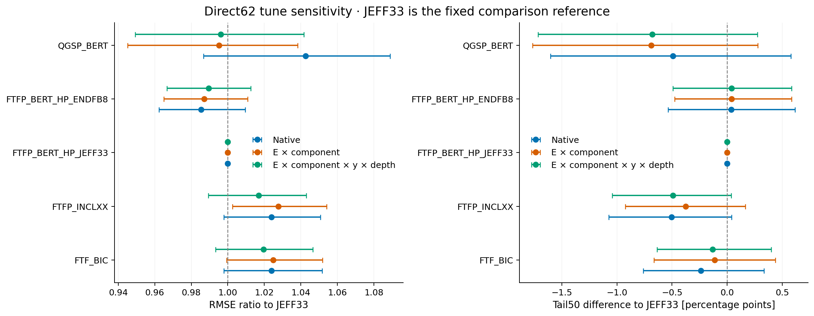
Reference JEFF33 is a comparison convention, not the training physics model. Shared incoming bootstrap multipliers retain known cross-tune dependence. Intervals do not include generator-parent/source certification, retraining, calibration estimation, response production, or full physical systematic uncertainties.Download PDF
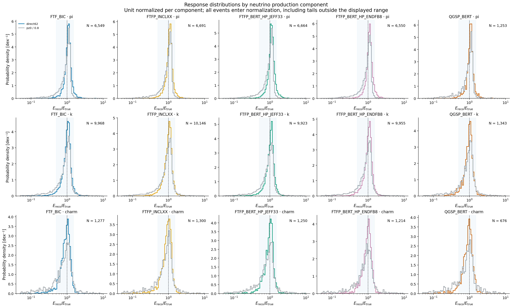
Separate π/K/charm unit-normalized energy response distributions. Histograms here are supplemental response diagnostics; the energy-energy heatmaps separately use continuous unbinned KDE.Download PDF
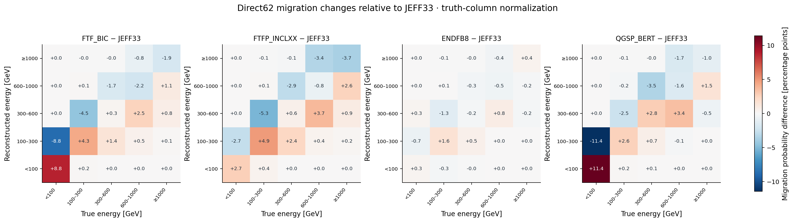
Differences of the native primary truth-column migration matrices, on a shared symmetric color scale. Composition within coarse truth bins remains a possible contributor; these differences are not a calibrated systematic covariance.Download PDF
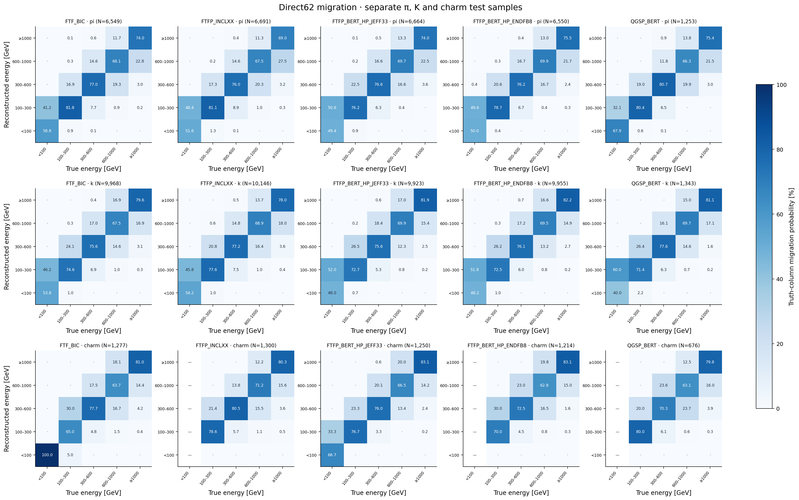
Component-resolved direct62 migration probabilities. No averaging over a different π/K/charm mixture; dash denotes absent truth support, dot denotes <0.05%.Download PDF
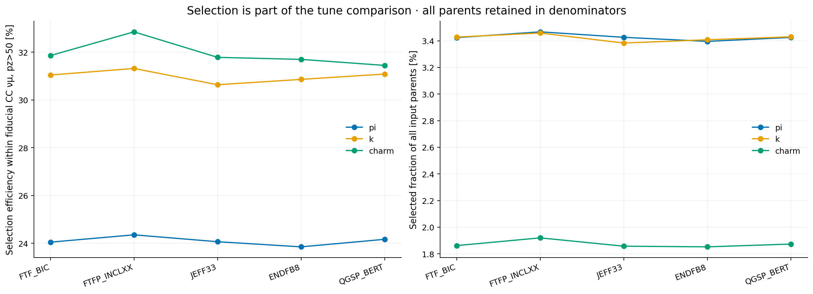
Unweighted production-view efficiencies by component, before any training-overlap exclusion or model prediction. Fiducial denominator follows the original cumulative truth cuts. QGSP uses the fixed uniform full-file sample; remaining tunes use all available RDO files. No independent-binomial interval is implied because incoming/source reuse is present.Download PDF
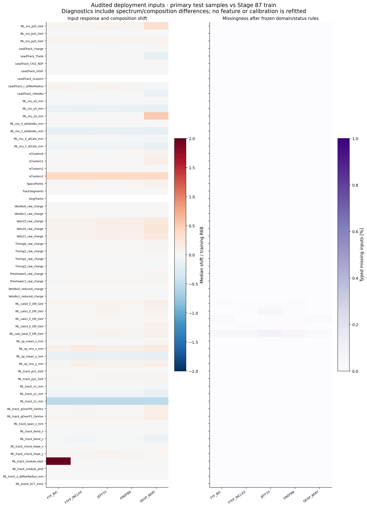
62-feature medians and typed-missing fractions under the unchanged deployment preprocessing. Continuous-variable shifts are normalized to the training central-68% half-width; discrete/constant training columns with zero width are masked. Color saturation at ±2 is only a display choice; exact values and out-of-training-range fractions remain in feature_profiles.tsv. These diagnostics are not a causal transport attribution.Download PDF
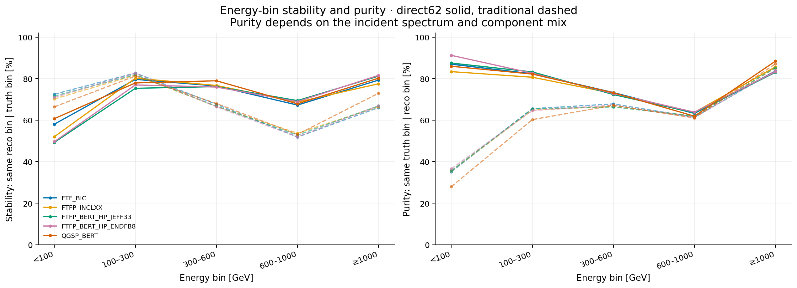
Stability is the diagonal truth-column probability; purity uses reconstructed-row normalization. Both are conditional on selection and native primary sample composition. Per-bin actual incoming support is in migration_quality.tsv; neither quantity alone measures unfolding accuracy or total selection efficiency.Download PDF
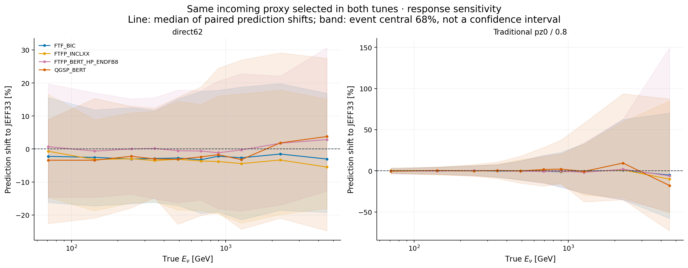
Each exact incoming proxy contributes one mean log prediction per tune over its selected response views. Shift = 100 × [exp(mean logE_tune − mean logE_JEFF33) − 1]. Pairs must pass selection in both tunes and have no known train/cal overlap. Proxies are equally weighted here; the QGSP component mixture follows the sampled shared subset, without inverse-probability correction. This controls the incoming proxy and energy, but does not certify identical GENIE final state, vertex, G4/digitization seed or complete parent lineage. Selection effects are reported separately. Bands show event dispersion, not statistical uncertainty.